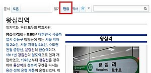
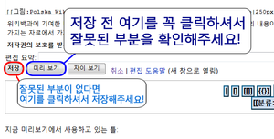
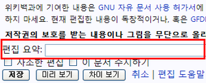
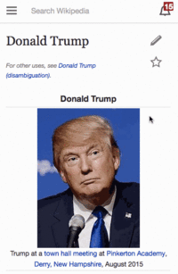
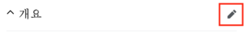
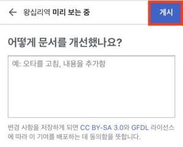

위키백과는 위키미디어 재단이 운영하는 열린 백과사전입니다. 위키백과는 200여 개가 넘는 언어판이 있으며, 2001년 개설된 영어 위키백과의 경우 현재 5,000,000개가 넘는 문서를 보유하고 있습니다. 한국어 위키백과의 경우 2002년 10월에 시작하였으며, 현재 총 497,284개의 문서가 있습니다.
위키백과가 다른 백과사전들과 다른 점은 아래와 같습니다.
만약 미성년자 사용자라면 먼저 위키백과:어린이와 학생들을 위한 조언을 읽어 주세요. 익명 기반의 위키백과에서는 여러분이 미성년자인지 확인할 수 없으므로, 모든 사용자는 동일한 책임과 의무를 부담합니다. 편집에서 도움을 받고 싶다면 위키백과:학생 캠프를 방문해 주세요. 또한, 위키백과:학생 대모험을 통해 위키백과를 시작해보시는 것도 좋습니다.






문서 편집을 두려워하지 마세요. '누구든지' 위키백과의 문서들을 편집할 수 있으며, 모든 사용자들은 여러분이 위키백과를 열심히 편집하는 것을 환영할 것입니다!
위키백과는 기술적인 지식을 많이 요구하지 않습니다. 그 대신 다른 이들을 생각하는 마음을 가지고 위키백과의 규칙에 따라 문서를 작성하시거나 편집해 주세요. 어떻게 편집해야 할지 잘 모르시겠다면, 위키백과의 길라잡이나 빠른 길라잡이가 여러분께 편집 방법을 안내해 드릴 것입니다. 그리고 다른 궁금한 점이 있다면, 위키백과 FAQ를 둘러보세요. 아무리 생각해도 궁금한 것에 관한 질문은 질문방에 해 주세요. 연습장에서 편집 연습도 하실 수 있어요!